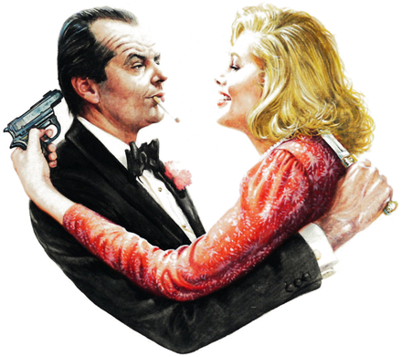

The Prizzi
Wedding
Supper in honor of Don Corrado's granddaughter
and her groom
P
Charley P.
AFTER THE CAKE
Our Lady, Sunset Park. Every Prizzi marries here.
To begin
The bride's antipasto
Lemon-marinated mushrooms, salami, olives, artichokes.
Brooklyn arancini
Saffron rice round a mozzarella heart, fried gold, marinara.
Zucchini fritti
Light crisp batter, sea salt and a squeeze of lemon.
Seating
Who Sits Where
7
Maerose. Far from Charley.

First dance. Both came armed.